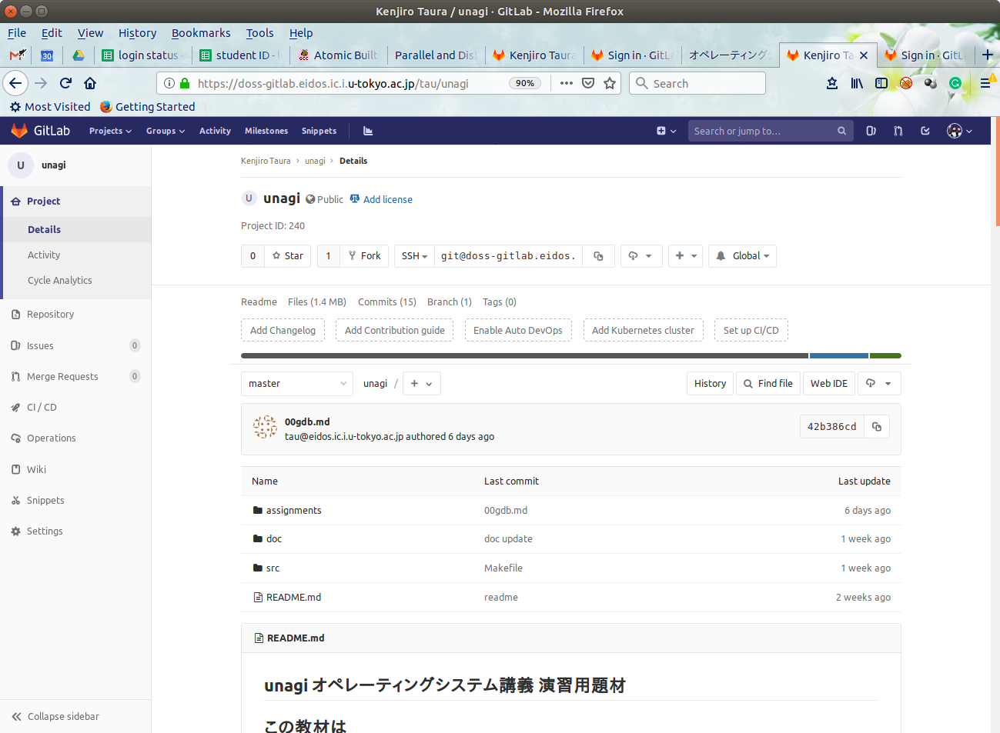
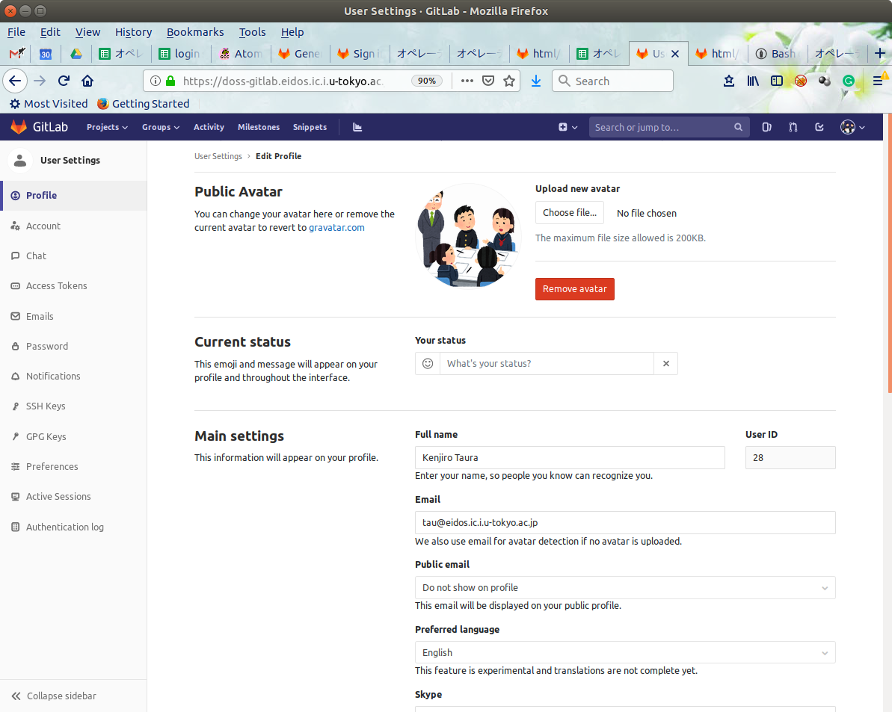

演習を始めるに当たってgitlab
というサーバに自分のアカウントを作り,
こちらで用意したレポジトリをコピー(fork)
して自分のレポジトリを作る.
注: 前回のものとは異なる手順に
なるので, 前回すでにgit cloneして作業を始めた人も,
以下の手順に従って始めて下さい.
すでにある程度コードを書いたという
人はすみませんが, 適宜手動で反映させて下さい.
-
田浦研で用意したgitlabサーバ
に行き, ユーザを登録(Register)する.
なお, 後期実験で課題「大規模ソフトウェアを...」をやった
人はすでに登録済みのはずなのでそれを使えば良い.

-
登録が済んだらSign inする.
-
その上で
unagiトップページに行く.

- 左上にある "Fork" というボタンを押すと, このレポジトリのコピーが
できる(以下「自分のレポジトリ」).

- 自分のレポジトリのトップページに行く.
ページ上部のメニューから Projects -> Your Projects
を選べば, unagiという名前の, 自分のレポジトリが見つかるはずである.
-
自分のレポジトリのページを開きそのページのURLを
コピーし,
この スプレッドシートに貼りつける.
なおそのページのURLは,
https://doss-gitlab.eidos.ic.i.u-tokyo.ac.jp/gitlab上でのUSER名/unagi
という文字列になっているはず. 例えばユーザ名がtauなら
https://doss-gitlab.eidos.ic.i.u-tokyo.ac.jp/tau/unagi
- いよいよ自分のレポジトリをダウンロード(clone)する.
以下(下線部)をコマンドライン(端末)で実行.
なお, Windowsな人でgitコマンドがないという人は,
Windows用のセットアップ
を参照.
$ git clone https://doss-gitlab.eidos.ic.i.u-tokyo.ac.jp/gitlab上でのUSER名/unagi.git
またはすでにSSHのキーが登録してある人は
$ git clone git@doss-gitlab.eidos.ic.i.u-tokyo.ac.jp:gitlab上でのUSER名/unagi.git
どちらの場合もgit clone以降の文字列は,
自分のレポジトリのページで,
HTTPSとかSSHとか書かれている右のURL部分をクリックし,
コピーすればよい. 前者は HTTPS, 後者は SSH を選ぶとコピーできる
以降の作業はgit cloneしてできたフォルダ内で作業をし,
作業結果は自分のレポジトリにcommit + pushする
ことで提出する.
以下の説明は大部分はgitを使って作業をする際の一般的な説明に
過ぎないので適宜, 巷の解説ページなども参照して下さい.
また,
別の演習のために書いたページも参照.
- 基本は, 提出に含めたいファイルに対して
$ git add ファイル名
を実行し,
- 次に
$ git commit -m "コメント"
を実行. コメントは変更内容の要約を書く. 最後に
-
$ git push
を実行してサーバに変更を送信する.
語感からは, commitという操作でサーバに変更が送信されそうな気がするが,
実際には push を行わないと送信されないので注意.
push したら自分のレポジトリのページを見に行けば,
変更点が反映されていることが確認できる.
注意としては,
$ git add ファイル名
を実行しないと, 例え変更されたファイルであってもcommitには含まれない.
多数のファイルを変更してどれをaddしてよいかわからない場合は,
それぞれを手動でaddする代わりに commit コマンドに -a をつけるのでもよい.
$ git commit -m "コメント" -a
ただしこの場合も, 新たに追加したファイルについては, 明示的にaddしてやる必要がある. まとめると, もう一つのやり方は,
- 新たに追加したファイルに対して
$ git add ファイル名
を実行し,
- 次に
$ git commit -m "コメント" -a
を実行.
-
$ git push
を実行してサーバに変更を送信する.
gitは, 複数台のマシン上にソースをcloneして,
その作業結果を転送するためにも使える. 例えばA, B二つの
マシンで作業をしているとし, Aで作業をした結果をBに送りたいときは,
- A上で上記の, add, commit, pushを行う
- B上でレポジトリの存在する場所に行って,
$ git pull
その他覚えておくと良いコマンド.
- git status : 変更されたがまだコミットしていないファイルなどを表示してくれる. また, ファイルとして存在しているがレポジトリにaddされていないファイルも表示してくれるので, ファイルのaddし忘れなどを防ぐのに役立つ
- git diff ファイル名 : 特定のファイルに対し, レポジトリにコミットされている版といま手元にある版の差分を表示してくれる. 自分がどんな変更をしたかを確認するのに使える.
レポジトリをcloneしたり,
親レポジトリの設定(git remote add upstream)
をする際に指定するURLには, HTTPSのURLと,
SSHのURLがある. 前者は毎回パスワードを打たなくてはいけないので
不便. 後者を使うにはSSHの公開鍵を登録する必要がある.
「公開鍵って何?」という人は今日のところは一旦忘れて下さい.
以下は, 自分のSSH公開鍵がどこにあるかわかっている人向けの説明
- gitlabのトップページ
に行く
- 画面右上の丸い画像をクリック, プルダウンメニューを出して,
"Settings"を選択.
- 現れたページの左のメニューから, "SSH Keys" を選択.

{kind=link}
{kind=link}